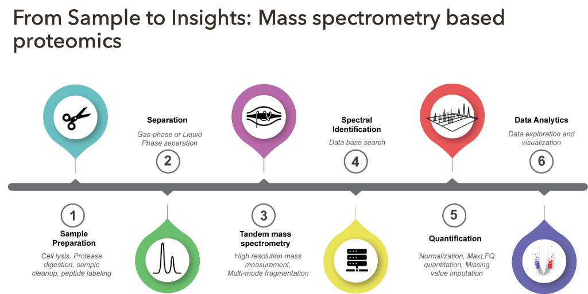

Proteomics Platform
Max Planck Unit for the Science of Pathogens
Max Planck Unit for the Science of Pathogens
Kathir manages state-of-the-art mass spectrometry infrastructure, providing end-to-end MS analytical services and expert scientific consulting for internal and external researchers. Since 2021, the platform has delivered results for more than 200 registered project submissions and 25 external collaborations, supported by automated liquid-handling robotics, an in-house LC-MS/MS QC system, and FAIR-compliant data analysis and dissemination.
We develop and deploy tailored LC-MS strategies across diverse biological models (spanning human clinical samples, eukaryotic model organisms such as Drosophila, and microbial systems) to address complex questions from discovery to targeted validation.

End-to-end analytical pipeline: From sample preparation, separation, and Orbitrap MS/MS acquisition to spectral identification, quantification, and downstream data analytics.
High-depth DDA, DIA, and targeted PRM workflows across complex matrices, characterizing cellular proteomes, bacterial secretomes, extracellular vesicles (EVs), and low-abundance small proteins.
Targeted enrichment and gas-phase ion mobility (FAIMS/EThcD) for site-specific N- and O-glycoproteomics, intact glycomics, phosphoproteomics (including Arg-phosphorylation), and multi-PTM crosstalk.
Affinity purification mass spectrometry (AP-MS) and cross-linking mass spectrometry (XL-MS) to resolve dynamic protein–RNA and protein–protein architectures and regulatory assemblies.
Next-generation micro-sample preparation (SP3), automated liquid-handling robotics, multi-protease multiplexing (GlycoPlex), and continuous performance tracking via the in-house Karuppar QC engine.
Rigorous statistical workflows, custom interactive visualization (VizGlyProt, Magnum), and standardized, reproducible pipelines powered by the modular SILAMBU ecosystem with open PRIDE deposition.
The platform utilizes project-tailored proteomic sample processing workflows and quantification techniques, providing a comprehensive proteome-informatics infrastructure for rapid data processing and secure data storage.
The laboratory houses two high-resolution hybrid mass spectrometers:
Both feature a FAIMS PRO source for atmospheric ion mobility separations, allowing for improved analyte selectivity and expanded proteome coverage.
Agilent Bravo Automated Liquid Handling Platform for high-throughput SP3, Mag-Resyn, and PTM enrichment protocols.
Representative studies enabled by our platform workflows across microbial physiology, human innate immunity, model organisms, and vaccine engineering: